Campaign Dashboard
User Guide
Campaign Dashboard is a desktop app for prepping and running a D&D campaign: writing the world and house rules, prepping locations and NPCs and jobs, running the actual session with a live battle map, and keeping a permanent record of what happened afterward.
Everything is stored in a local file on your machine, not in the cloud, so your notes and any NPC secrets stay private. It works for async play / Play by Post just as well as sitting at a real table or on a call, the live-session tools like the battle map and the Player Window are built specifically for that in-person side.
Want to try it yourself first? A downloadable demo build is available near the bottom of this page, in section 11.
Screenshots below are from a throwaway demo campaign (Guild Founding), not real campaign content.
What's new
v0.7.1
- NPCs can now have a portrait, with a live preview on the NPC sheet and a thumbnail on the NPC table, matching Players and Locations. It shows up on that NPC's token on the map too.
- Monsters, Spells, Equipment, and Magic Items tables now have pagination (10/15/30/100 rows per page).
- Starting turn order now warns if anyone's still missing an initiative roll instead of starting the fight silently.
- Editing a Player, Location, or NPC's portrait/image URL now shows a live preview right next to the field, and editing an SRD monster's portrait no longer opens a separate popup, it expands inline in the stat block instead.
v0.7.0
- Added a homebrew compendium: your own Monsters, Magic Items, and Equipment, shown alongside the official rules content and usable anywhere a monster can be, see section 8.
- Homebrew content now travels with exported Campaigns and Adventures, and can also be exported/imported on its own.
- Compendium gained a sortable table view, source filters (official vs. homebrew), and a portrait field for SRD monsters.
1. Getting started
The app opens on the My Campaigns screen every time, it doesn't auto-resume whatever you were last playing.
The very first time you launch it, you'll get a popup asking for your DM name before anything else unlocks. This name is attached to every campaign you create and travels with anything you export or share later, so use something you're fine having a friend see if you ever hand off an adventure.
From My Campaigns you can:
- See a grid of your existing campaigns, most recently played first, each showing NPC/location/quest counts and how long ago you last opened it.
- Click + New Campaign to start one. You'll name it, then choose either Fresh Adventure (start blank) or From Your Library (build off something you saved earlier, see section 10).
- Click any campaign card to open it.
- Switch to the Library tab in the top nav to manage saved adventures, or import one from a file.
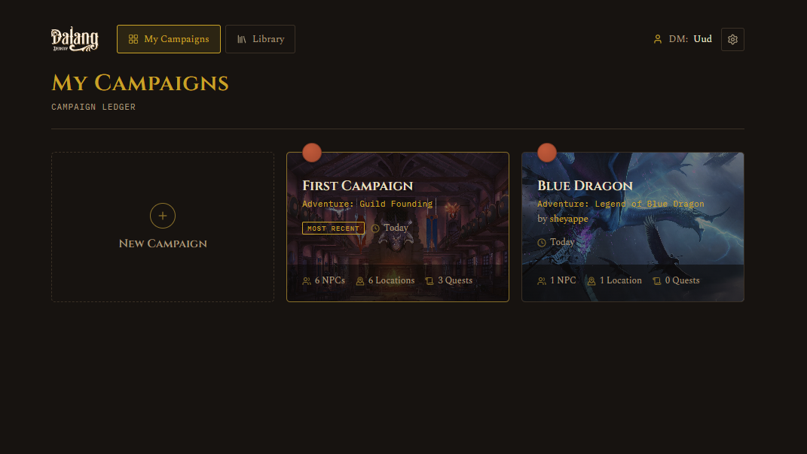
2. Finding your way around
Once inside a campaign, the sidebar is grouped into four sections:
Preparation: Story, Gameplay, Campaign Prep, NPC, Job Board / Quest, Players
Active Campaign: Active Campaign, Event Log
Reference: Compendium
Settings: Campaign Settings
The Active Campaign tab gets a small dot next to it whenever a session is actually running, so you can tell from the sidebar alone whether something's live. Clicking a tab you're already on resets it back to its list view, handy if you drilled into a detail screen and want to back out fast.
At the bottom of the sidebar, Back to My Campaigns takes you out to the campaign picker.
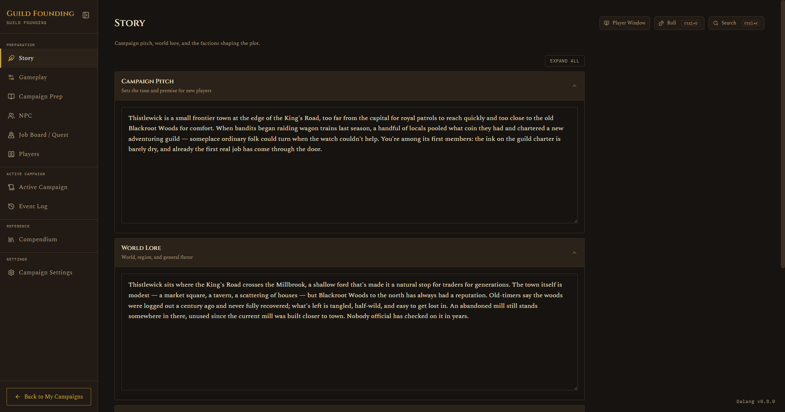
3. Prepping a campaign
Do this before your session, or gradually over time as the campaign develops.
Story
Three sections: Campaign Pitch, World Lore, Factions/Villains. Free text, expand or collapse each as needed. This is where the big picture lives, the stuff a player would read if you handed them a one-pager about the world.
Gameplay
Covers table logistics and character creation rules: game system, session rhythm, starting level and gold, how leveling works (milestone or XP), house rules, and so on.
There's a Share Gameplay button that bundles Table Setup, Character Rules, and House Rules into one editable, copyable handout. Use this when you're onboarding a new player and want to hand them everything at once instead of re-explaining house rules from memory.
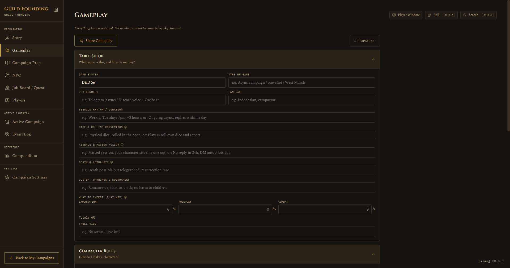
Campaign Prep
This is where locations live, and it's the backbone the rest of the app hangs off of.
Locations can be nested one level deep (for example, Phandalin as a top-level location, with the Stonehill Inn underneath it). The list view shows each location with counts for encounters, treasure found, NPCs, and quests tied to it.

Click + Add location prep to create one. Click into a location to get its full detail view:
- Description: read-aloud text, plus a background image URL. That image shows up in three places: behind the location row, on the Active Campaign tab when it's your current location, and as the idle screen on the Player Window when nothing's running.
- Maps: add and open maps here, this is where you calibrate a map's grid before it can be used in a session (see section 4).
- Music Links
- NPCs available here: tag NPCs to this location with a search box.
- Planned Encounters: pre-build fights or scenes ahead of time, including where tokens should start.
- Treasure: a checklist you tick off as items get found.
- DM Notes
- Related Quests: a read-only list, populated automatically from tags you set on the Job Board tab.
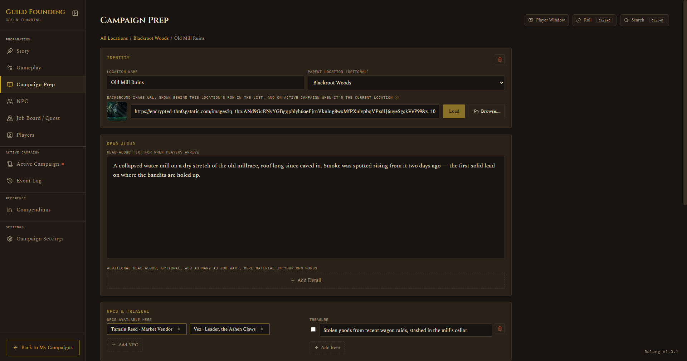
NPC
A sortable table (Name, Role, Attitude, Location), with search and filter dropdowns. Click a row to open the full NPC sheet: personality, goal or secret, mannerisms, attitude toward the party, and which location they're tied to. Each NPC can also have a portrait, paste an image URL into the Portrait URL field and a live preview shows up right next to it, and a thumbnail shows on the table too. The same portrait shows up on that NPC's token wherever they're added to a map.
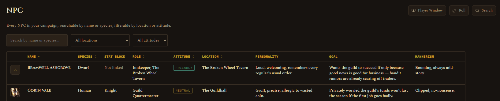
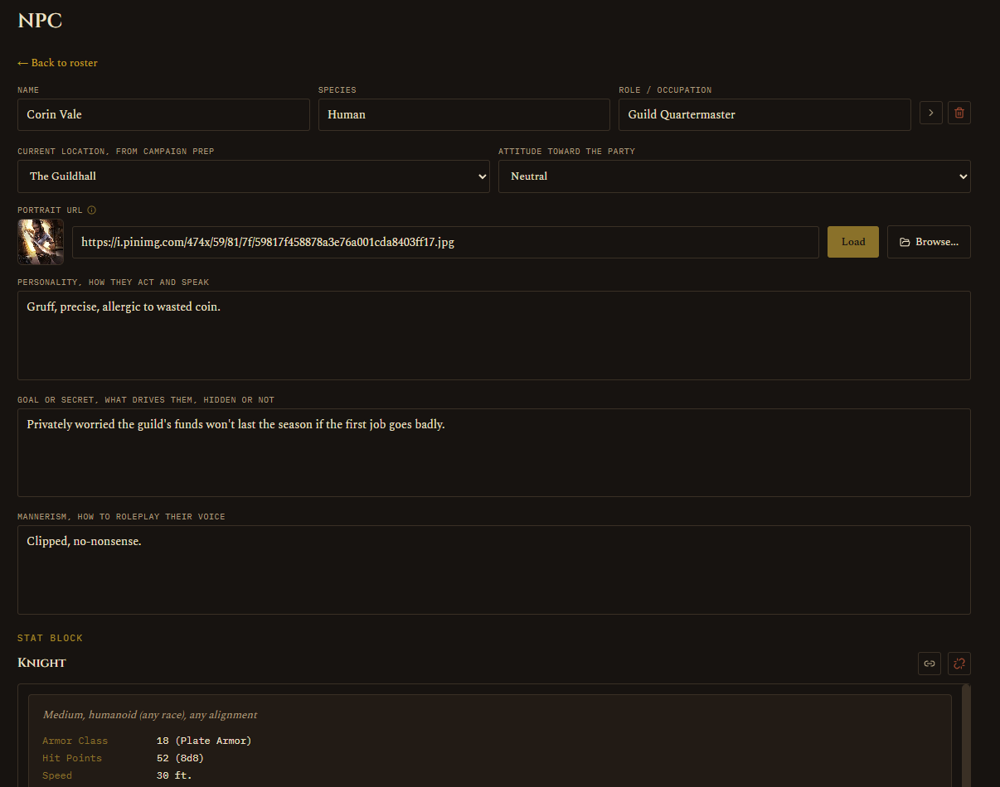
Job Board / Quest
This one's a card grid, not a table, styled like pinned notices on a board. Filter by status, quest giver, or location. Click + Add Quest to create one, click any card to edit it.
Each quest can be tagged to one or more locations (this is what feeds the "Related Quests" list back on Campaign Prep), and can be tied to an NPC as the giver, or just given free text if you don't want to formally assign one.
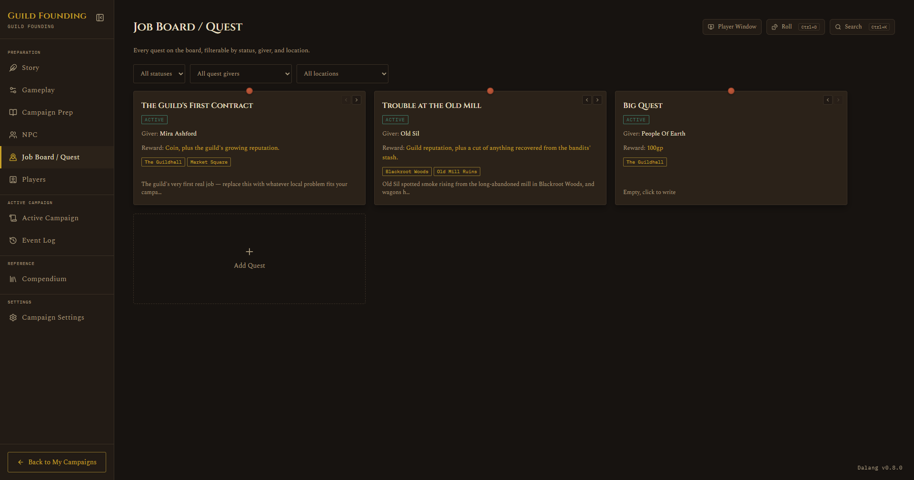
Players
A roster of character cards, toggle each Active or Inactive. Only Active characters show up on the Active Campaign tab. Click into a card for the full character sheet: race, class, level, quick stats (AC, HP, passive perception, etc.), ability modifiers, description, and a couple of DM-only fields like player nickname and personal notes.
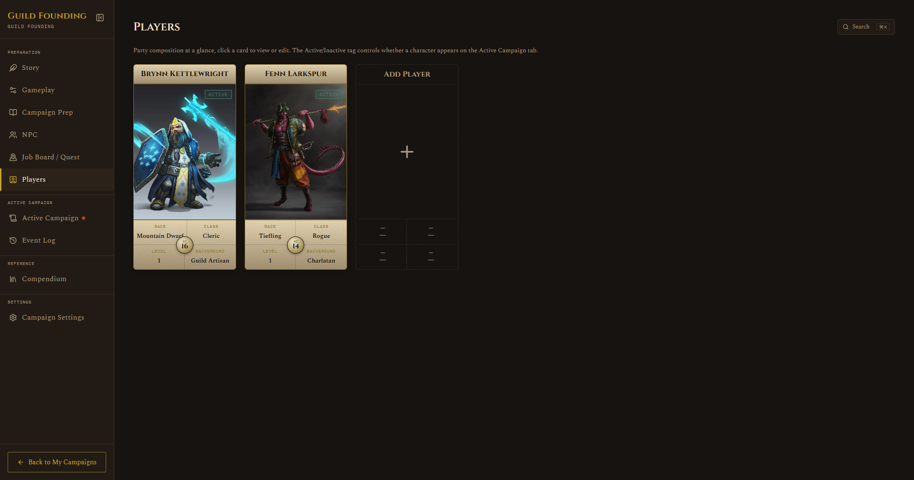
4. Setting up a map
Do this before a session so you're not fumbling with grid calibration while people are waiting.
- On a location's Campaign Prep page, add a map by pasting an image URL and clicking Load.
- This opens the map popup with three modes: Pan & View, Calibrate Grid, and Fog of War.
- In Calibrate mode, drag the two handles onto adjacent grid intersections on the image. The app uses that spacing to work out real distances later (for the ruler tool, spell radius labels, and so on). You can also select a handle and nudge it with arrow keys for precision.
- In Fog of War mode, click or drag to mark which cells are hidden by default when a session starts. This sets the baseline, not what's revealed live during play, that gets edited separately once a run is underway.
- Click Save & Close when you're done.
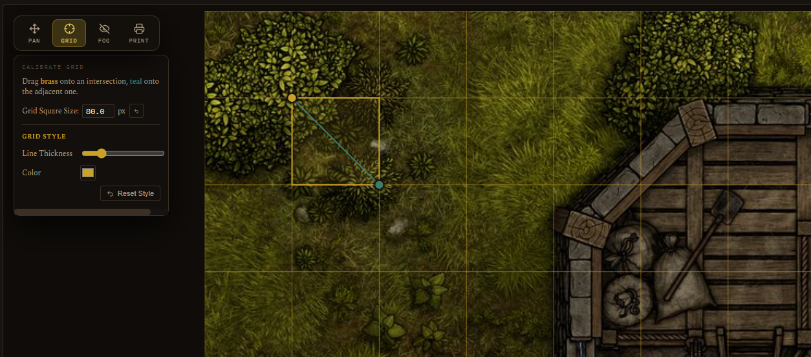
If you want to place tokens ahead of time (an ambush, a set encounter), open the encounter from Campaign Prep and use its Map Setup section. It uses the same placement grid as the live battle map, so tokens you place here are exactly where they'll be when you hit Start.
5. Running a live session
Open the Active Campaign tab. If nothing's running, you'll see the hub screen: current location, party present, prepared encounters for this location, maps, NPCs present, active quests, and a quick "Log This Moment" box for jotting things down as they happen without leaving the tab.
Starting a run
Two ways to begin:
- Start on a prepared (or ad-hoc) encounter. This snapshots the party and monster placements, rolls initiative automatically for monsters and NPCs, and resets that map's fog to whatever you set as the baseline.
- Explore on a map, for scenes without combat. No initiative, no HP tracking. If the party already explored this map before, it resumes wherever they left off, positions carry over between sessions.
You can start an encounter mid-exploration too, the app will ask you to confirm and logs the interruption automatically.
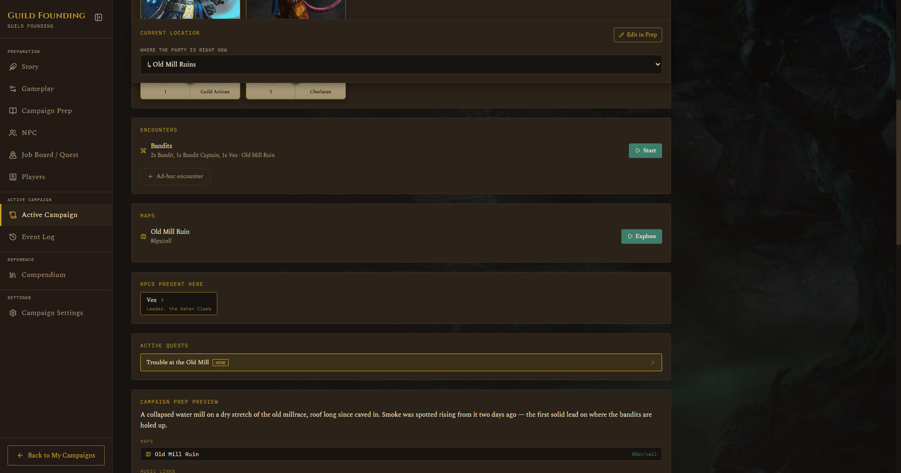
During combat
The live run screen adds:
- Add Combatant: pull in players, monsters, NPCs, or homebrew stat blocks mid-fight.
- Combatants / Initiative Tracker: roll initiative with one click (auto-rolled for monsters and NPCs, left blank for players so you can enter what they report), then use Next Turn to step through the round.
- Battle Map: the shared placement grid, now with live tools bolted onto it. Drag tokens to move them, they snap to the grid.
- Combat Log: a private scratchpad, separate from the permanent Event Log, that auto-notes HP and condition changes plus anything you type in manually. This resets when the fight ends and doesn't pollute the permanent record.
Click any token to get a small popup with quick actions (nudge HP, hide from players, lock its position) and a button into the full Quick-Info view (HP, conditions, concentration toggle, stat block for SRD monsters).
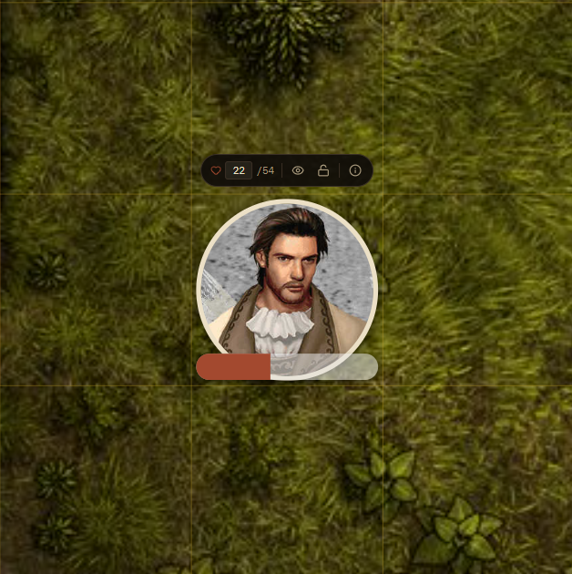
Map tools during a run
A small toolbar sits directly on the map:
- Edit Fog: reveal or hide cells live as the party explores.
- Ruler: click and drag to measure real distance in feet, fades a few seconds after you let go.
- Ping: click to pulse a spot for everyone watching, including the Player Window.
- Draw: pen, line, rectangle, circle, or cone, useful for marking spell areas or sketching a rough plan. Unlike ruler and ping, drawings stick around until you clear them.
- Focus Mode: expands the map to fill nearly the whole window, fading out the sidebar and other cards. Good for when you just want the map big during a tense moment. Click again to exit, it restores your exact scroll position and zoom.
- HP Visibility: choose whether player, NPC, or monster HP numbers are visible on the Player Window. Off by default.
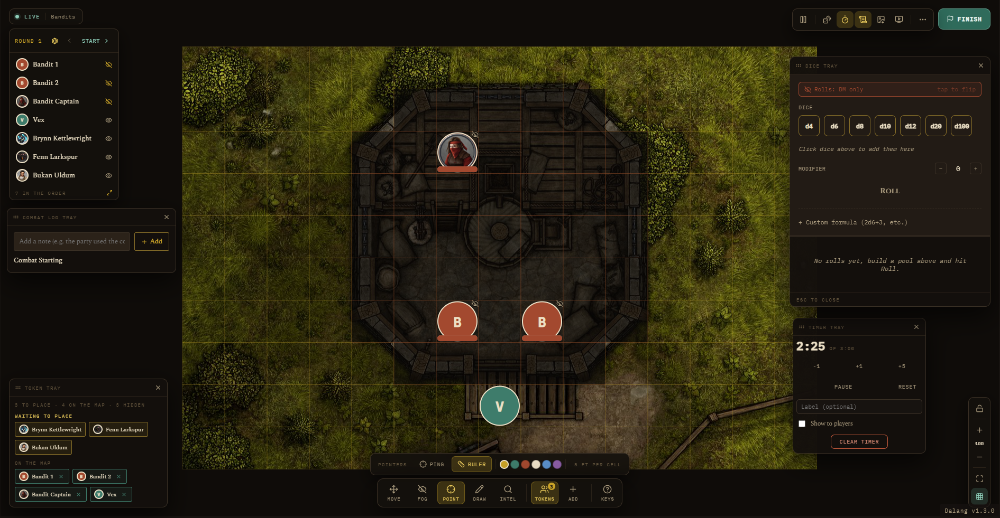
Ending a run
Finish Encounter (or End Exploration) writes one entry to the permanent Event Log. You can add a summary, or leave it blank for an auto-generated note. If you just want to bail without any record at all, there's a separate, quieter Abandon Run link.
6. The Player Window
This is a second window meant to be dragged to another monitor or shared on a call, so players see the map without seeing your DM-only notes and controls.
Open it from the Player Window card on the Active Campaign hub, click Open Player Window. It stays open across runs, clicking the button again just brings the same window forward instead of opening a new one, and it closes automatically when you close the main app.
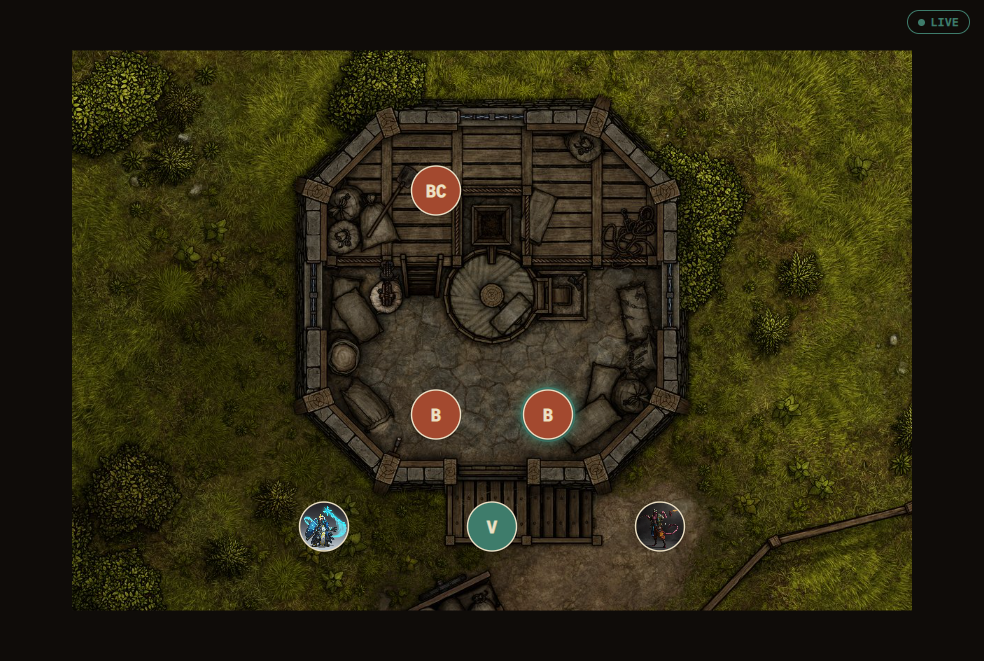
What it shows:
- When idle: the current location's background image with the location name overlaid. If no image is set, it just shows a plain "no session in progress" message.
- When a run is live: it mirrors your map, fog-gated so hidden areas stay hidden, along with tokens, the ruler, pings, and drawings, following your camera automatically.
There's a Pause button in the map toolbar if you need to rework the map without the players watching mid-edit, it freezes the second window entirely until you hit Resume.
If you'd rather just post a snapshot somewhere (Telegram, for instance) instead of a live feed, use Export Player View from the map toolbar, it captures exactly what's currently revealed and lets you save or copy it as an image.
7. After the session, the Event Log
Everything that gets written to the permanent record shows up here: quick notes you logged during play, and the summaries from finished encounters or explorations. It's a straight timeline, filterable by location.
You can edit or delete entries here, but new ones only ever get created from the Active Campaign tab, this tab is for cleanup and review, not for adding fresh entries.
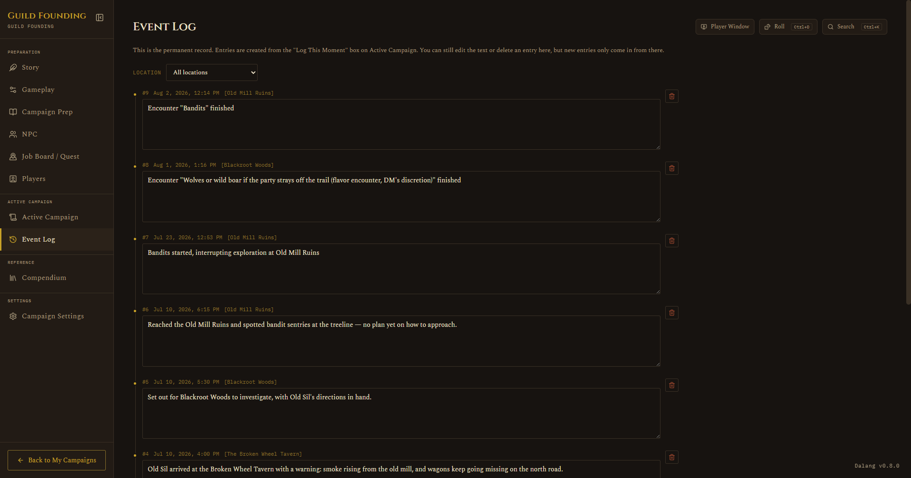
8. Compendium
A built-in D&D 5e SRD reference, shared across all your campaigns rather than being campaign-specific. Browse by category (monsters, spells, conditions, equipment, magic items, plus rules and glossary sections), or search across everything at once. On top of the official reference, you can add your own homebrew content that lives alongside it.
Monsters, Spells, Equipment, and Magic Items open in a sortable table by default, with a rows-per-page control (10/15/30/100, defaults to 15) at the bottom once a category has more entries than fit on one page.
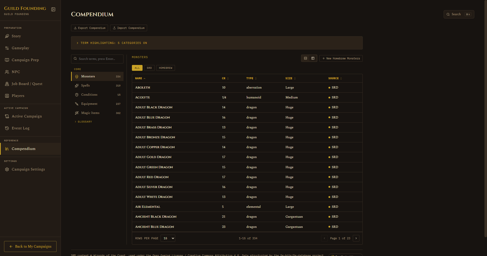
Official content vs. homebrew
Official content (SRD) is the built-in rules reference, the same Goblins, Fireballs, and Longswords in every install. You can browse it and search it, but you can't edit or delete it, it's meant to stay accurate to the real rules.
Homebrew content is what you create yourself: your own custom monsters, magic items, and equipment. It shows up mixed in with the official entries in the same lists, with a small "HB" tag next to the name so you can tell it apart at a glance. Unlike official content, you can edit or delete your homebrew entries any time.
Only three categories support homebrew right now: Monsters, Magic Items, and Equipment. Spells, Conditions, Rules, and the rest of the reference categories are official-content-only for now.
Homebrew is shared across all your campaigns
This is the part worth understanding clearly: your homebrew library isn't tied to one campaign. Create a homebrew monster while working on Campaign A, and it's already there, ready to use, when you switch to Campaign B. You never have to recreate the same custom monster twice.
Because it's shared, editing or deleting a homebrew entry affects it everywhere, not just the campaign you happen to have open. If you tweak a homebrew monster's hit points, that change applies wherever you use it. If you delete one, it's gone from every campaign, not archived.
One thing to watch for: if you've already added a homebrew monster to a Planned Encounter or a Live Run, and you later delete that monster from the Compendium, the encounter keeps the token but loses its connection to the stat block, HP won't auto-fill and its full stat block won't show anymore. Editing a homebrew monster is always safe. Deleting one you're actively using somewhere is the thing to be careful with.
Creating a homebrew entry
- Open the Compendium tab and pick Monsters, Magic Items, or Equipment.
- Click + New Homebrew [Category] above the list.
- Fill in whatever fields apply, name is the only one required.
- Save. It appears in the list right away, tagged "HB".
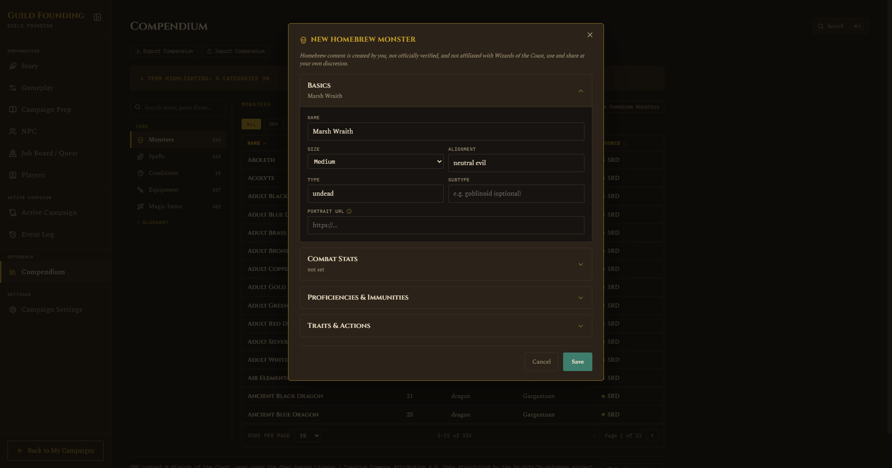
Click any homebrew entry to view it, then use the Edit or Delete buttons on its detail page. Official entries never show those buttons, that's how you can tell at a glance whether something is yours to change.
Portraits
Homebrew Monsters can have a portrait image (just paste in an image link). It shows up on the Compendium entry and on that monster's token whenever it's placed on a battle map, the same way NPC and Player portraits already work.
You can also add a portrait to an official SRD monster without making a homebrew copy of it, open the monster's page and use Edit Portrait, the field expands inline right there in the stat block. Since SRD content is shared across every campaign, that portrait shows up everywhere too, not just your current campaign.
Magic Items and Equipment don't have portraits, they never appear as tokens on a map, so there's nothing to show a picture for.
Using a homebrew monster in a fight
Homebrew Monsters work exactly like official monsters everywhere combat happens:
- Campaign Prep → an Encounter → Combatants, there's a Homebrew tab alongside Players/Monsters/NPCs, search and add your monster the same way.
- Active Campaign → Add Combatant during a live run works the same way.
Once added, it gets a token with the right size, portrait if you set one, and hit points pulled from what you entered in the Compendium.
Sharing homebrew with another install
When you export a Campaign or Adventure to a file (My Campaigns → Campaign Settings → Export), your whole homebrew library goes along with it automatically. Whoever imports that file gets their own copy of every homebrew Monster, Magic Item, and Equipment entry you'd made, added to their own library, so any Encounter in the file that uses your homebrew monster still works correctly for them.
A couple of things worth knowing about how that works:
- It's your entire homebrew library that travels with the file, not just the entries that particular Campaign or Adventure actually uses. If you've built up a big personal bestiary, all of it goes along, even the parts unrelated to what you're sharing.
- Each import creates fresh copies. If you export and import the same file twice, or import from two different people who both had your homebrew monster, you'll end up with duplicate entries in your library, they won't merge or recognize each other as the same thing. Worth a quick tidy-up pass in the Compendium after importing if that happens.
Quick search
Press Ctrl+K (or Cmd+K on Mac) from anywhere in the app to pull up a quick search without leaving what you're doing.
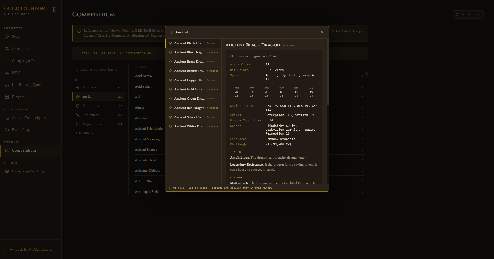
9. Campaign Settings
Rename the campaign or its adventure title, set a campaign image, and manage a few campaign-wide things:
- Export: choose Adventure only (world content, for sharing with another DM, leaves out your session history and players) or Full campaign (everything, for moving to another device).
- Save Adventure to Library: keeps a reusable copy you can spin up new campaigns from later.
- Delete Campaign: in the danger zone at the bottom, requires typing a confirmation phrase. There's no undo, so make sure you've exported anything worth keeping first.
10. Library and sharing adventures
The Library (top nav, next to My Campaigns) holds adventures you've saved for reuse, either your own or ones imported from another DM.
- Import adventure: pulls in a file someone else exported, shows you a preview of what's inside before finalizing.
- Rename or delete saved adventures with the pencil and trash icons on each entry. Deleting a library entry doesn't touch campaigns you already created from it.
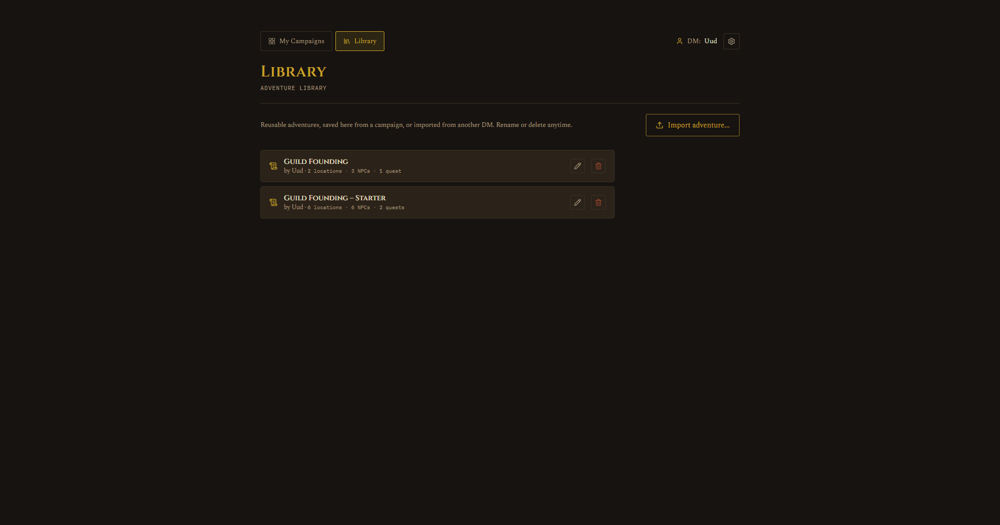
11. Download the demo build
Want to try the app itself instead of just reading about it? Grab the demo installer here: